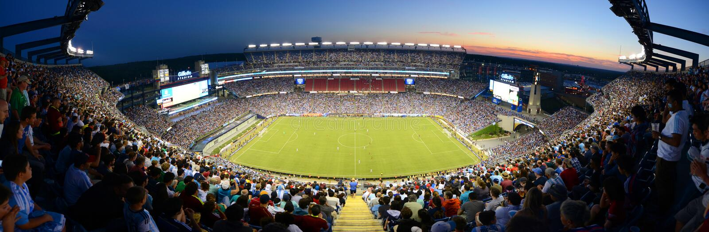

Since soccer is a global sport, it has a dictionary that might not be familiar to the American fan or player. Here’s the easiest one. The reason it’s not normally called football here is to avoid confusion. Unlike other sports where the rules change every season, soccer is very conservative. The rules of the game are called "The Laws" and can only be changed by a meeting of representatives from England, Scotland, Wales, and Northern Ireland. That makes changes rare and the rules fairly straightforward. You can get a copy of the Laws of the Game from FIFA. It’s the international governing body for soccer that runs the World Cup. That’s the biggest tournament in soccer that features 32 National Teams that qualify by region. There are 10 players and one goalkeeper per team on the field. To win, you have to shoot the ball into the opponent's goal more often than the opposing team in yours.
The USL Championship was formed when two existing professional leagues were combined into a single league property before the 2011 season. The league was designed to help ensure the long-term stability of professional soccer in North America and featured 12 teams in a pair of six-team divisions during its initial campaign. Among the league’s founding members were five longtime USL clubs with more than 100 years of operation among them.
The Basics of Soccer, similar to baseball, there’s no set field dimensions. Instead, soccer uses minimums and maximums allowing fields to fit within those dimensions. The length has to be somewhere between 100 yards (91m)and 130 yards (119m) and the width between 50 yards (46m) and 100 yards (91m). That’s a big difference, so the rules are tighter for international games. These top tier games need fields between 110 (100m) and 120 yards (110m) that are between 70 (64m) and 80 yards (73m) wide. Regardless of the overall size, the goal (8 feet (2,4m) high by 8 yards (7,3m) wide), the six-yard box immediately in front of the goal, and the 18-yard box all have to be exactly those dimensions. The soccer field is also called "pitch".
The game lasts 90 minutes plus stoppage time. There are two halves of 45 minutes each and. Since the clock doesn’t stop in soccer, the referee adds time back at the end of each half to make up for pauses in play. The referee indicates how much time gets added, but it’s not exact. That means a 90 minute game normally lasts 94 minutes or longer at the discretion of the referee. In soccer, players play until the referee blows the whistle.
There’s normally one referee on the field who controls the whistle and the cards. In soccer, punishment is doled out through the referee raising a yellow or red card. A yellow card warns a player for breaking the rules. If the incident is serious, the referee can hold up a red card. Than the player isn't able to play the rest of the game, with his team unable to put in a sub. That’s called ‘playing a man down’ and it means the team plays with 10 instead of 11 players. Two yellow cards to the same player also equals a red and a sending off. A team can play with no less than 7 players on the field. If a foul happens in the 18-yard-box, the referee can award a penalty. That means the fouled team gets to take a kick directly at the goalkeeper from the penalty spot 12 yards from the center of the goal line.
Soccer balls come in sizes. A young player use a size 3, older Players use size 4, adults a size 5 ball. Balls used to be made of leather, weren’t waterproof. The modern soccer ball is normally made with a plastic covering and is surprisingly light.
At professionelsoccer there’s 11 players per side, with three substitutes from the players on the bench. Once a player subs out, they’re done for the game. Soccer is roughly divided into four positions, the goalkeeper, the defender, the Midfielder and the Forward:
The goalkeeper is the only player on the field who is allowed to use their hands when the ball is in play. He or she can't use their hands outside of the 18-yard box. His job is using his or her entire body to keep the ball from crossing the goal line so the other team doesn’t score. The goalkeeper always wears a different color shirt so he or she is easy to spot by the referee. Traditionally, that shirt was green.
A basic formation in soccer is 4-4-2. Formations only apply to field players cause you have to have a goalkeeper. You read the formation starting with the defender. The first 4 in the 4-4-2 means four defenders, the players in front of the goalkeeper. There aren't always four defenders. The team can play in any formation the coach wants. The main task of the defender is to block the opposing players so that they can't score a goal.
Midfielders take on attacking and defensive responsibilities, linking the defenders with the forwards and trying to keep the flow of play going. Unlike American football, the positions aren’t set with complicated playbooks. A midfielder can defend and attack.
Forwards are the players most expected to score goals. From an offensive perspective, formations are designed to get the ball to the attacking players so they can do their job.
